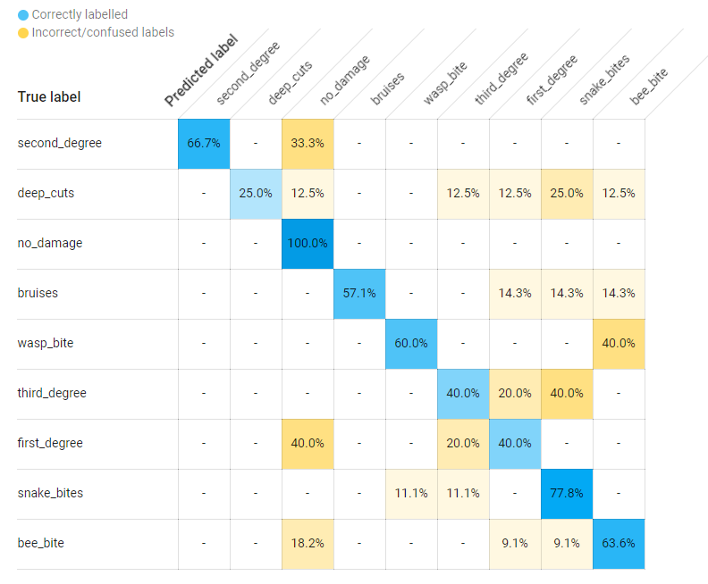
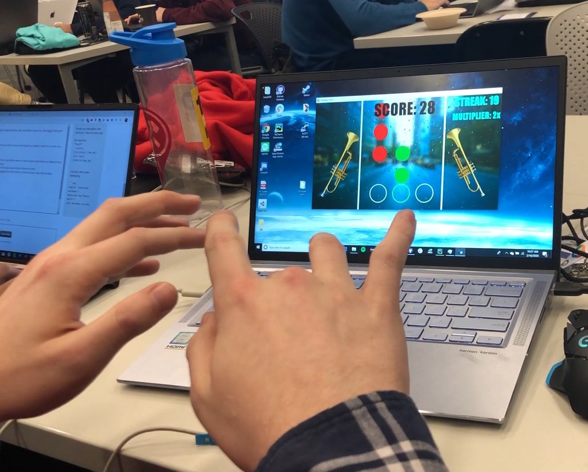
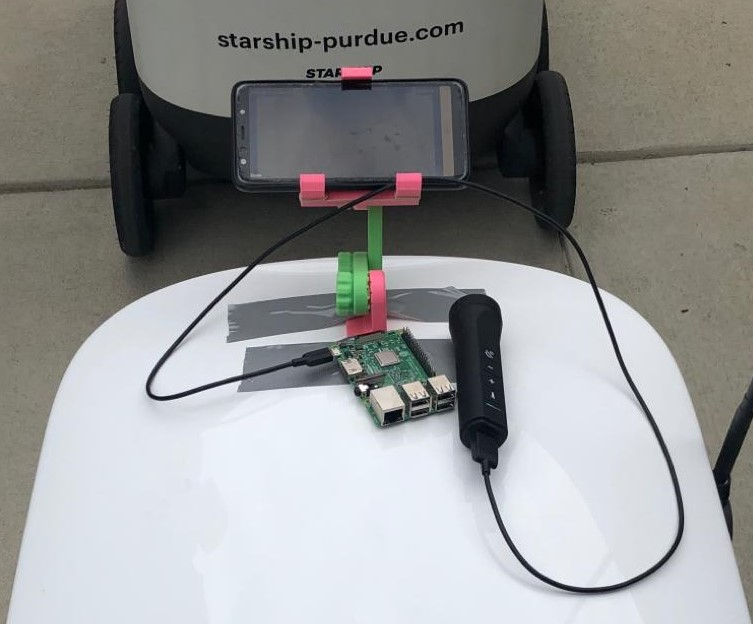
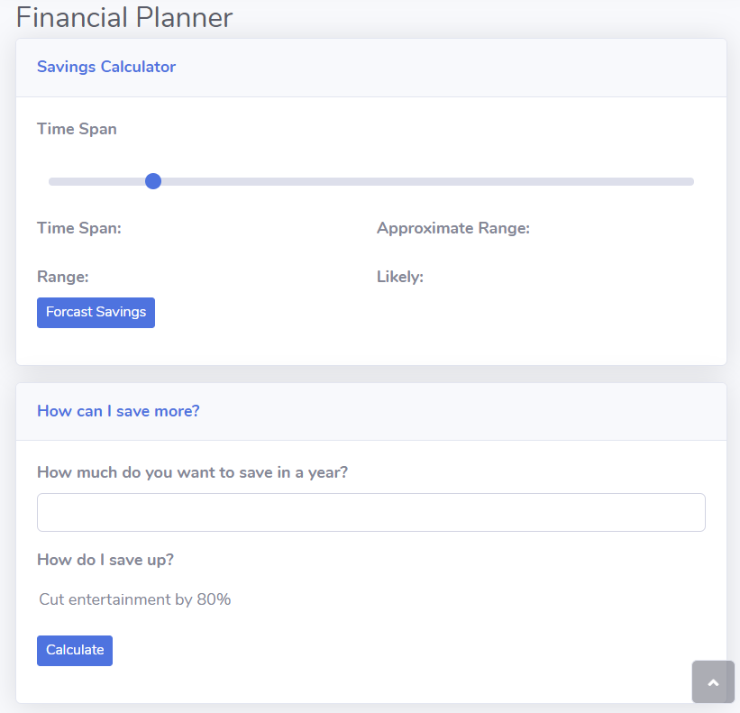

AidFirst
Winner of Best Use of Google Cloud in BoilerMake 2020
- It acts as an instant guide to First Aid, helping users identify injuries
and telling them the steps to perform first aid. The injury is identified
based on camera photos using a trained model.
- We used Flutter to build the app, and Google Cloud Vision to train the AI.

Trumpet Hero
UncommonHacks 2020 Submission
- Used Leap Motion's Python Libraries with a Leap Motion sensor so that
the game could detect finger presses.
- Utilized Pygame Library to create a rhythm game that used
Leap's Motion Sensors as input.
- Integrated a Python MIDI library
to convert songs to notes mapped as finger combinations for the game.

EcoHunt
Winner of EcoMake 2019 Hackathon
- Online competitive scavenger hunt game for finding and picking up trash located by cameras
- Trained Azure Custom Vision API identify images of trash on sidewalks and uploaded photos to
Google Firebase
- Designed frontend of website with HTML/Bootstrap, and coded backend with ASP.NET framework in C#

UpSave
HackIllinois 2020 Submission
- Uses historical data from Capital One's API to forecast the future
costs and income that someone will have for them to have better financial planning
capabilities.
- Utilized Bootstrap to develop the front-end of the web app in HTML and CSS.
- The back-end was handled entirely with JS and C# using the ASP.NET framework.
Used Firestore to connect the Capital One Hackathon API with the back-end of our secure login system.
Airline Reservation System
CS 18000 Final Project
- Java program that goes through the process of booking a flight through a
Graphical User Interface in Java
- Worked with components of Network I/O to create a server to communicate
stored information to clients
MIDI File Editor
CS 24000 Final Project
- GUI built using GTK in C to perform alterations to song files, such as
changing the speed, instrument and notes.
- Also implemented in C parsing of data from a .midi file into data structures,
as well as creating of a library from all the .midi files in a folder.
Hack for Hong Kong
MHacks 2019 Submission
- Website application that takes photos from a phone camera, and detects logos
in the photo and determines the company’s stances on issues such as the Hong Kong protests
- Implemented Google Cloud Vision API to detect logos in captured
photos